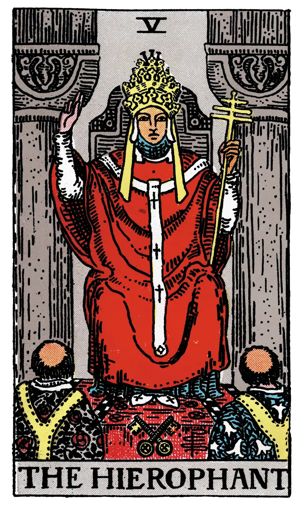

The Hierophant

A.E.W.
Upright
Marriage, alliance, captivity, servitude; by another account, mercy and goodness; inspiration; the man to whom the Querent has recourse.
Reversed
Society, good understanding, concord, overkindness, weakness.
S.L.M.M.
Upright
Mercy, Beneficence Kindness, Goodness
Reversed
Over-kindness, weakness, Foolish exercise of generosity.
Description
He wears the triple crown and is seated between two pillars, but they are not those of the Temple which is guarded by the High Priestess. In his left hand he holds a sceptre terminating in the triple cross, and with his right hand he gives the well-known ecclesiastical sign which is called that of esotericism, distinguishing between the manifest and concealed part of doctrine. It is noticeable in this connexion that the High Priestess makes no sign. At his feet are the crossed keys, and two priestly ministers in albs kneel before him. He has been usually called the Pope, which is a particular application of the more general office that he symbolizes. He is the ruling power of external religion, as the High Priestess is the prevailing genius of the esoteric, withdrawn power. The proper meanings of this card have suffered woeful admixture from nearly all hands. Grand Orient says truly that the Hierophant is the power of the keys, exoteric orthodox doctrine, and the outer side of the life which leads to the doctrine; but he is certainly not the prince of occult doctrine, as another commentator has suggested.
He is rather the summa totius theologiæ, when it has passed into the utmost rigidity of expression; but he symbolizes also all things that are righteous and sacred on the manifest side. As such, he is the channel of grace belonging to the world of institution as distinct from that of Nature, and he is the leader of salvation for the human race at large. He is the order and the head of the recognized hierarchy, which is the reflection of another and greater hierarchic order; but it may so happen that the pontiff forgets the significance of this his symbolic state and acts as if he contained within his proper measures all that his sign signifies or his symbol seeks to shew forth. He is not, as it has been thought, philosophy-except on the theological side; he is not inspiration; and he is not religion, although he is a mode of its expression.
Additionally
The High Priest or Hierophant, called also Spiritual Father, and more commonly and obviously the Pope. It seems even to have been named the Abbot, and then its correspondence, the High Priestess, was the Abbess or Mother of the Convent. Both are arbitrary names. The insignia of the figures are papal, and in such case the High Priestess is and can be only the Church, to whom Pope and priests are married by the spiritual rite of ordination. I think, however, that in its primitive form this card did not represent the Roman Pontiff.